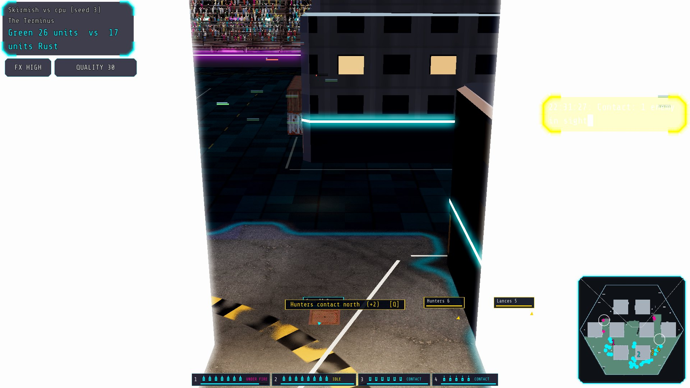
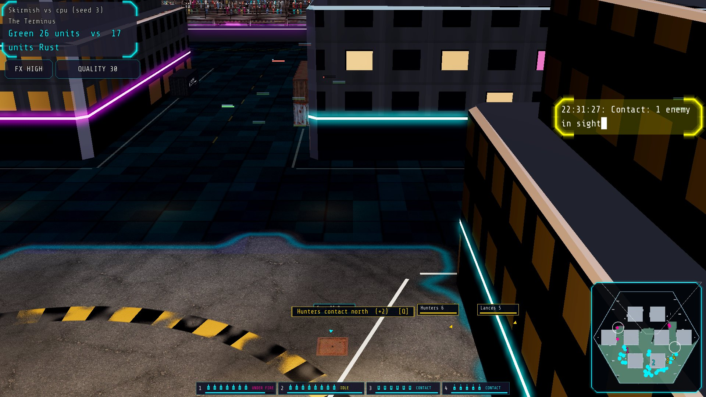
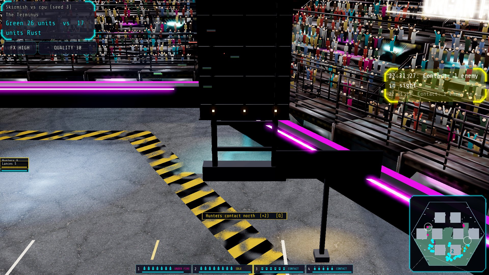
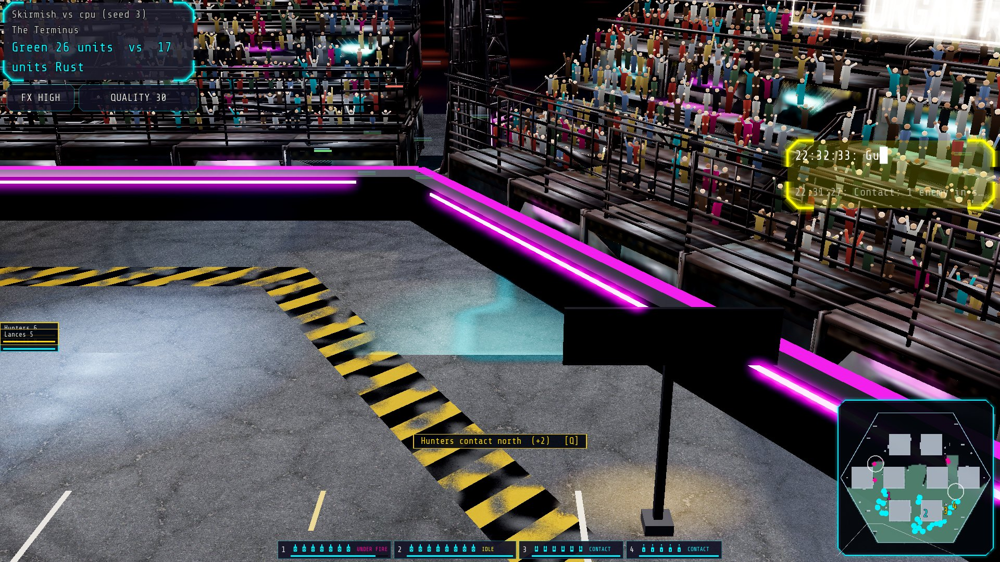
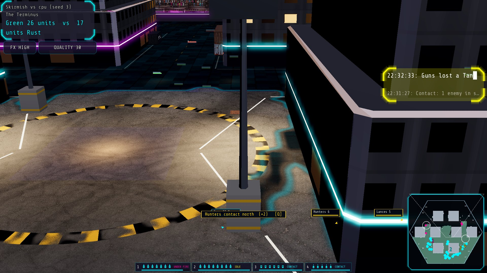
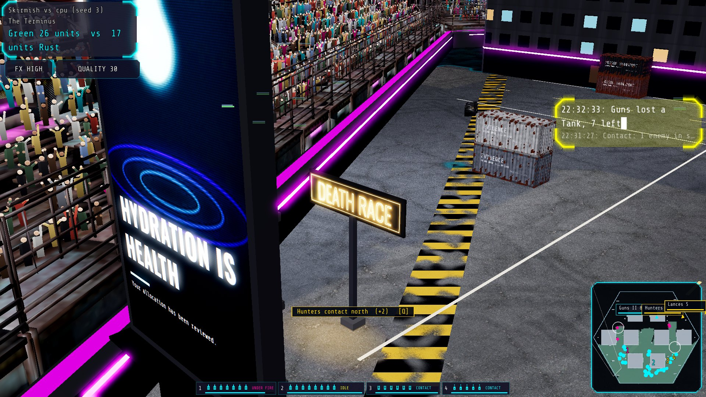

One frozen moment of a 30-a-side fight (arena terminus, 6 s after the first shot), photographed from every pose. Only the camera changes. Pick the frame closest to "between StarCraft 2 and Twisted Metal" - its label is all the game needs.
A floodlight's collider is its 3 m footing and it is drawn 16 m tall; an ad screen's is a 1.4 m plinth under a 20.7 m LED wall. Each pair is the same spot and yaw at your pose (FOV 35, 49 m): left as the camera read the colliders, right as it reads the drawing. The last row is what is deliberately NOT cut.






Zooming out also tilted the camera toward top-down (25° to 82°): the same slider did both.
Rows: pitch below the horizon. Columns: distance from the fight.
| 28 m out | 50 m out | 90 m out | |
|---|---|---|---|
| 25° | |||
| 35° | |||
| 45° | |||
| 60° |
Rows: pitch below the horizon. Columns: distance from the fight.
| 28 m out | 50 m out | 90 m out | |
|---|---|---|---|
| 25° | |||
| 35° | |||
| 45° | |||
| 60° |